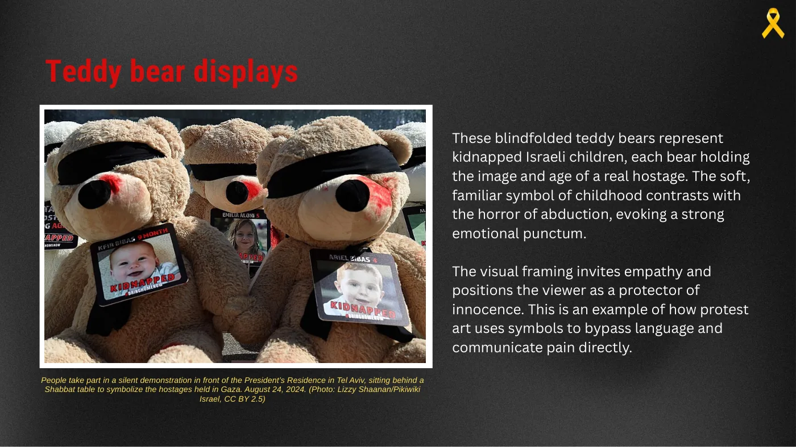
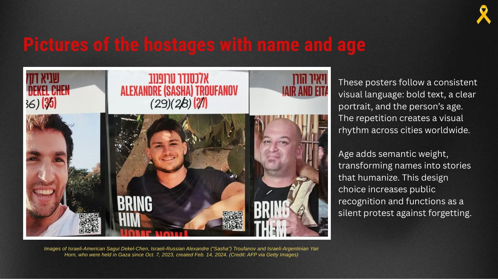
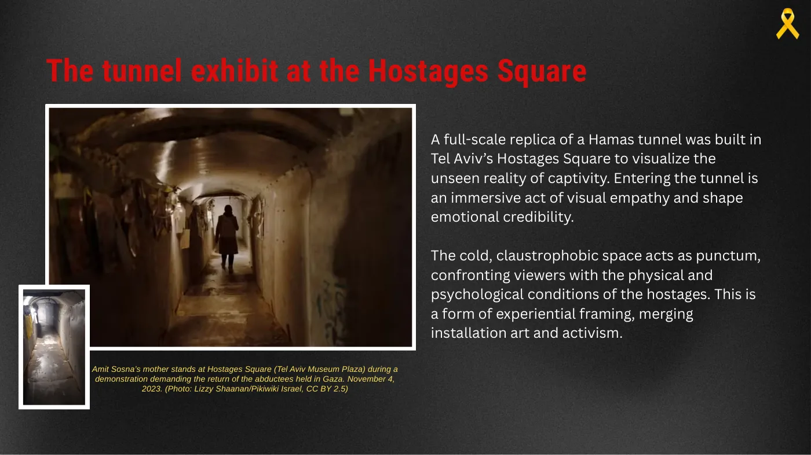
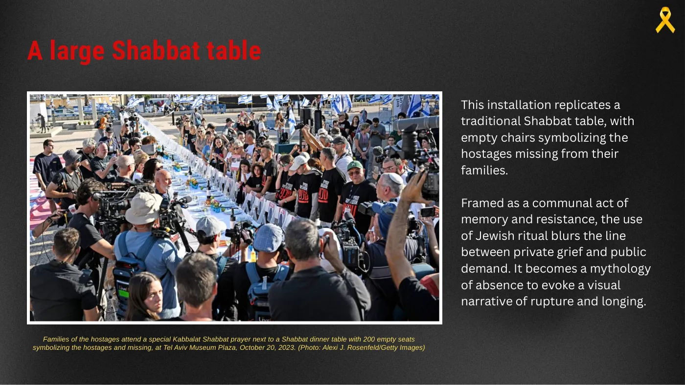
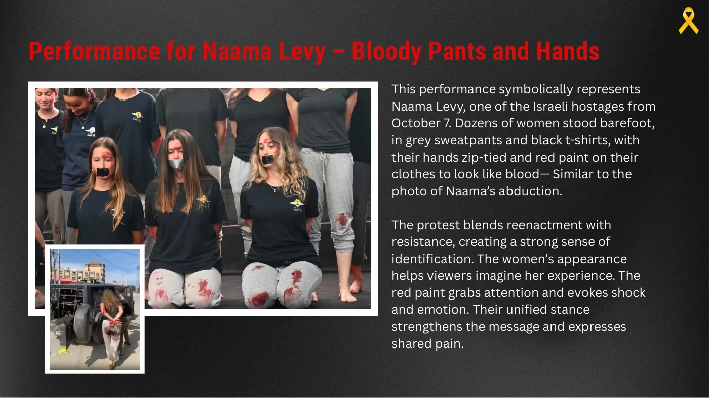
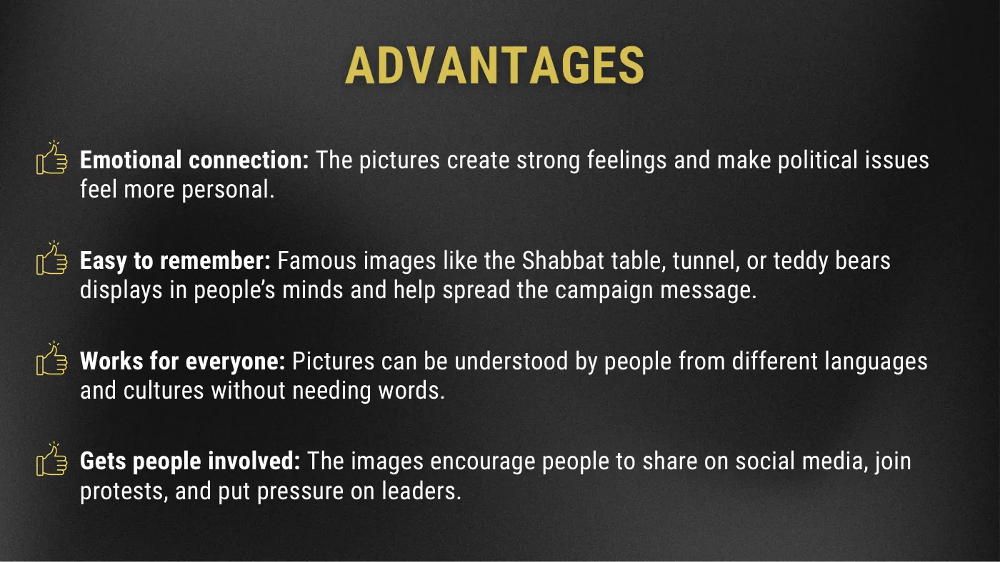
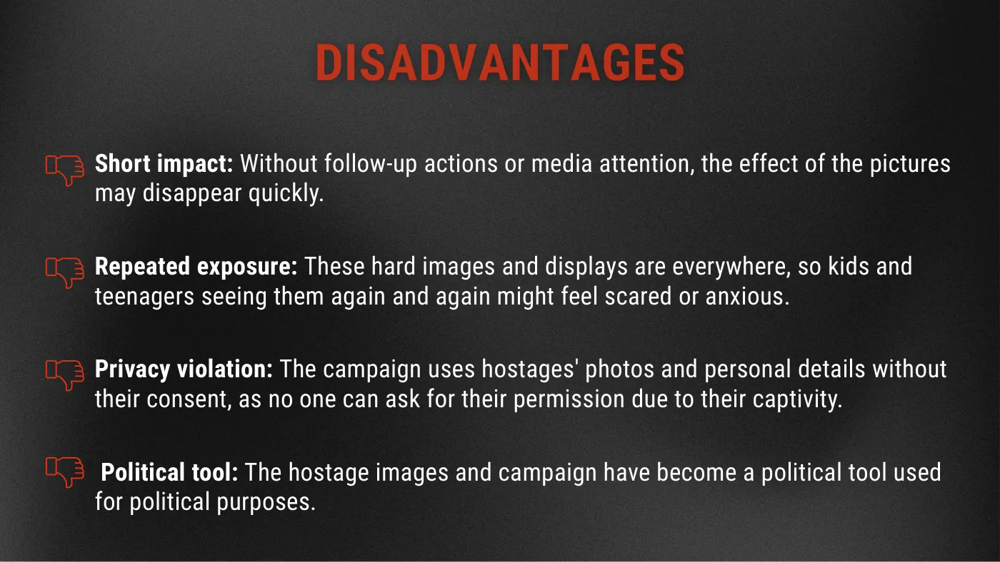

«Bring Them Home Now»: cómo una campaña visual convierte una crisis en algo personal
Un análisis de la campaña del Foro de Familias de Rehenes y Desaparecidos en Israel, nacida después del 7 de octubre de 2023: cinco piezas visuales leídas con las herramientas de la comunicación visual (encuadre, símbolo, studium y punctum, la presencia del ausente) para entender por qué funcionan y qué cuestan.

El caso
El 7 de octubre de 2023 Hamás secuestró a 251 personas. En días, un grupo de WhatsApp se volvió un foro de familias con una sola misión, apartidaria: traerlos a todos a casa. La campaña salió de la sociedad civil y tuvo resonancia global porque convirtió una tragedia en un asunto personal y colectivo a la vez. Nuestra tesis: lo logró con encuadre estratégico, símbolos y una puesta en escena de la autenticidad que activa empatía y urgencia.
- 2023, días después del 7 de octubre: artistas israelíes en Nueva York imprimen los primeros carteles «Kidnapped».
- 2023: la primera «mesa de Shabat vacía» en la Plaza de los Rehenes de Tel Aviv, con 200 sillas; semanas después, la cinta amarilla como símbolo de esperanza y de regreso.
- 2024: la réplica a escala real de un túnel en la plaza; más tarde, decenas de mujeres recrean en Tel Aviv la escena del secuestro de Naama Levy.
- 2025: videos de rehenes debilitados provocan protestas de emergencia. Al momento del trabajo, 50 rehenes seguían en Gaza.
Elegimos cinco piezas y las leímos una por una con los conceptos del curso: encuadre temático y episódico, priming, studium y punctum (Barthes), mitologías, la presencia del ausente (Azoulay), la semiótica del color y del objeto (Kress y van Leeuwen), autenticidad y activismo visual.
1 · Los carteles con nombre y edad

Un lenguaje visual constante: texto en negrita, un retrato claro, la edad. Encuadre temático: cada caso individual pasa a ser parte de un problema colectivo. La repetición en ciudades de todo el mundo crea ritmo visual y un priming constante. La mirada directa de las caras produce un contacto inmediato con quien pasa. El rostro y el nombre son el studium, la información; la edad y la ubicuidad buscan el punctum, el detalle que hiere y humaniza. Es, además, una protesta silenciosa contra el olvido. El costo: fatiga por saturación y el riesgo de que el dolor individual se estandarice.
2 · La réplica del túnel

Una réplica a escala real de un túnel de Hamás en la Plaza de los Rehenes de Tel Aviv, para hacer visible una realidad que nadie ve. Entrar es un acto de empatía visual que construye credibilidad emocional. El espacio frío y claustrofóbico funciona como punctum: confronta a quien entra con las condiciones físicas y psicológicas del cautiverio. Es un encuadre experiencial: instalación artística y activismo en un mismo objeto.
3 · La mesa de Shabat vacía

Una mesa de Shabat con 200 sillas vacías. Encuadre episódico: recrea un momento ritual concreto y lo interrumpe. El ritual es una mitología central de la cultura judía, y su interrupción se vuelve símbolo de la crisis; la mesa que se extiende sin final es la metáfora de una tragedia que parece interminable. La silla vacía es el punctum de la ausencia: la presencia del ausente de Azoulay. El color también habla: la mesa blanca del ritual y los familiares de negro. El costo: queda limitada al espacio físico y puede leerse como un mensaje solo religioso.
4 · Los osos de peluche
Osos con los ojos vendados, cada uno con la foto y la edad de un niño secuestrado. El símbolo blando y familiar de la infancia contra el horror del secuestro: un punctum emocional fuerte. El encuadre visual invita a la empatía y ubica a quien mira como protector de la inocencia. Es el ejemplo más claro de cómo el arte de protesta usa símbolos para saltar el idioma y comunicar el dolor en forma directa.
5 · La recreación de Naama Levy

Decenas de mujeres descalzas, con pantalones grises y remeras negras, las manos atadas y pintura roja como sangre, igual que en la foto del secuestro. La performance mezcla recreación y resistencia, y produce identificación: la apariencia de las mujeres ayuda a imaginar la experiencia; el rojo atrae la mirada y provoca shock; la postura unificada expresa un dolor compartido. Es activismo visual que busca autenticidad con el cuerpo propio y activa la responsabilidad social del que mira. El costo: puede ser traumática para quienes participan y para quienes miran, y recrear una posible agresión sexual abre un debate ético.
Qué suman y qué cuestan
Dos piezas más completan la lectura en el trabajo escrito: la cinta amarilla, un símbolo universal de regreso aplicado a escala masiva (solapas, autos, perfiles), y el video de un rehén publicado por el captor como propaganda, cuya fuerza está en un punctum que nadie controla. Con las cinco piezas vistas, el balance.


Deslizá hacia el costado o usá las flechas. Tocá una captura para ampliarla.
| Ejemplo | Qué hace | Con qué herramienta se lee | Qué cuesta |
|---|---|---|---|
| Carteles con nombre y edad | Estandarizan cada caso (retrato, nombre, edad) y lo vuelven parte de un problema colectivo; la repetición en ciudades de todo el mundo crea ritmo y presencia constante. | Encuadre temático; studium (la información) y punctum (la mirada directa); la «presencia del ausente» de Azoulay. | Fatiga visual por saturación; el dolor individual se estandariza. |
| La mesa de Shabat vacía | Recrea un ritual central y lo interrumpe: la silla vacía es la presencia del que falta; la mesa sin fin es una tragedia que parece no terminar. | Encuadre episódico; mitología (Barthes); el punctum de la ausencia; color y objeto como discurso (Kress y van Leeuwen). | Limitada al espacio físico; puede leerse como mensaje solo religioso. |
| La cinta amarilla | Toma un símbolo universal de regreso y lo aplica a escala masiva: solapas, autos, perfiles. | Mitología y priming: la repetición mantiene la crisis latente. | Su simplicidad puede diluir la urgencia; riesgo de cliché. |
| La recreación de Naama Levy | Decenas de mujeres con la misma ropa, las manos atadas y pintura roja: trasladan la experiencia al cuerpo del espectador. | Activismo visual; autenticidad; punctum del dolor recreado; la responsabilidad social del que mira. | Potencialmente traumática; recrear una posible agresión sexual abre un debate ético. |
| El video de un rehén | Es propaganda del captor, pero su fuerza está en un punctum que nadie controla: el horror real del gesto, la expresión, el sonido de la pala. | Autenticidad que supera a la ideología; análisis multimodal. | Exposición repetida de imágenes duras; uso político. |
El cierre: tres autores para leer la campaña
Barthes da el par central: el studium es la información (cuántos rehenes, qué fechas) y el punctum es el detalle que hiere (la silla vacía, la expresión en un video). La campaña satura el studium con punctums. Azoulay suma la «presencia del ausente» y el contrato civil de la fotografía: cada cartel es una exigencia moral que convierte al que pasa en testigo. Kress y van Leeuwen permiten leerla entera como discurso multimodal: color, objeto, espacio, silencio y sonido construyendo un sentido que no necesita palabras.
La conclusión del trabajo: al combinar la semiótica de símbolos fuertes, el encuadre de relatos personales, el punctum de los detalles dolorosos y la autenticidad de la experiencia, la campaña logró atravesar las divisiones políticas y generar un reclamo global por la liberación de los rehenes.
Lo que una campaña se lleva de esto
La consigna pedía análisis, no propuesta. Pero cuando analizo una campaña lo hago como quien tiene que armar la próxima, y de esta me quedo con cuatro reglas.
- Un símbolo que cualquiera pueda reproducir vale más que una imagen perfecta. Un cartel con nombre y edad, una cinta amarilla: formatos que cualquiera copia sin pedir permiso ni presupuesto. Si la campaña depende de una sola pieza producida, no escala.
- La dosis de dolor es una decisión de diseño, no de intensidad. Repetir caras, cuerpos y heridas gana atención y, al mismo tiempo, cansa, asusta a los chicos y abre debates éticos. Cada pieza fuerte necesita un plan de qué viene después.
- Interrumpir un ritual conmueve más que dar una cifra. 251 secuestrados informa; una mesa de Shabat con 200 sillas vacías hiere. Buscar primero qué ritual, qué objeto, qué silencio puede cargar el mensaje; los datos van después.
- Nunca se controla del todo lo que una imagen termina diciendo. El video que el captor publica como propaganda se lee como pedido de auxilio. Vale al revés también: lo que una marca produce con un fin puede terminar leído con otro. Hay que mirar cada pieza desde el lugar de quien la ve.
Qué me llevé
Una herramienta para mirar cualquier campaña: separar lo que informa de lo que hiere, y preguntarse qué pide la imagen de quien la ve. También que las mismas decisiones que hacen eficaz una campaña (repetición, cuerpo, dolor real) tienen un costo que hay que poner sobre la mesa.